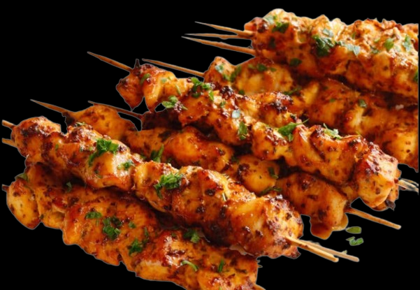
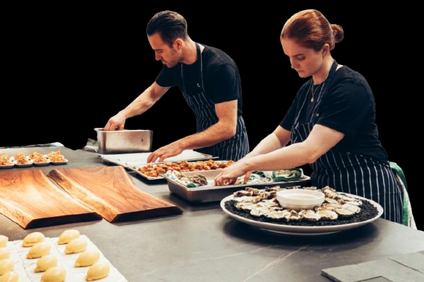
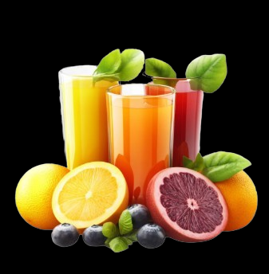
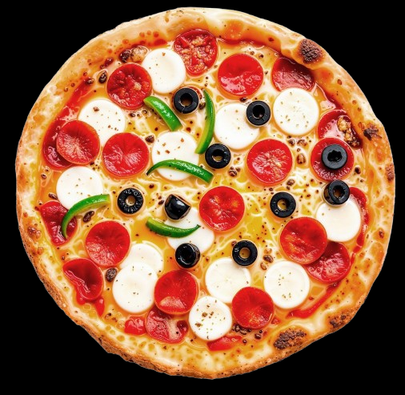

🍖 L'excellence
Dans la cuisine, aucun compromis n'est possible sur la qualité. Nous portons une attention minutieuse aux détails et à la perfection : de la sélection des matières premières à leur transformation.
Sur place, en ligne et pour vos événements.
Puisque chaque geste compte, nos équipes veillent à offrir une expérience client chaleureuse et à la hauteur de leurs attentes.
C'est dans cette quête d'excellence que nous cultivons notre différence.

KoSMax vous accompagne pour vos événements.

Dans la cuisine, aucun compromis n'est possible sur la qualité. Nous portons une attention minutieuse aux détails et à la perfection : de la sélection des matières premières à leur transformation.

Entre tradition et création, notre cuisine sénégalaise reste authentique : nos chefs s'inspirent d'un savoir-faire ancestral.

Africaine, la cuisine sénégalaise est généreuse, colorée et pleine de la convivialité du pays : des plats que l'on aime partager entre amis ou en famille.